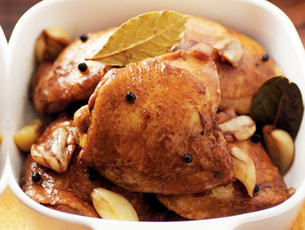

Adobo Recipe

Adobo is a very flavorful dish with a mildly sweet, tangy garlic and soy flavor.
The acid in the vinegar breaks down the fibers in the chicken, making it very tender.
Chicken is the usual meat of this dish, but you can use pork as well.
Now let us go to the Ingredients and Directions!
Ingredients
- 1 cup white vinegar
- 1/4 cup soy sauce
- 1 whole garlic bulb, smashed and peeled
- 2 teaspoons kosher salt
- 1 teaspoon coarsely ground pepper
- 1 bay leaf
- 2 pounds bone-in chicken thighs or drumsticks
- 1 tablespoon canola oil
- 1 cup of water
Directions
- In a shallow dish, combine the first 6 ingredients.
Add chicken; refrigerate, covered, 20-30 minutes.
Drain, reserving marinade. Pat chicken dry.
- In a large skillet, heat oil over medium-high heat;
brown chicken.
Stir in water and reserved marinade.
Bring to a boil. Reduce heat;
simmer, uncovered,
until chicken is no longer pink and sauce is
slightly
reduced, 20-25 minutes. Discard bay leaf. If desired,
serve chicken with cooking sauce.
- Enjoy!
Go to Home